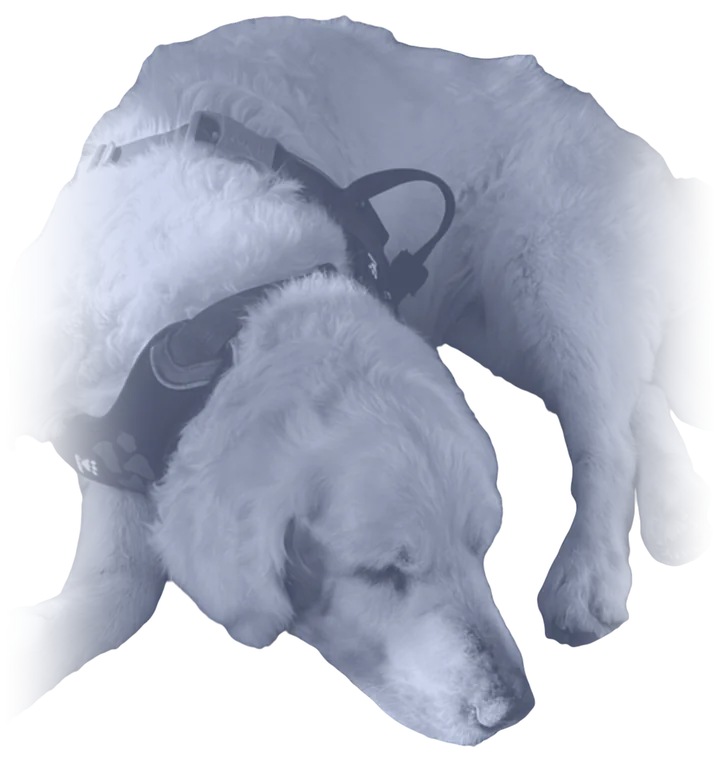

Why I made this
Mosjka
–

Mosjka was a kind dog. She loved sweets so much that once, when nobody was looking, she ate a whole cake, box and all. She loved the sea: walking in the water, collecting stones. She "read" books and any paper she could find, and she would pull the hair out of dolls, carefully, one strand at a time. She loved her food and ate and drank well to the very end. On walks she liked to stop at a café for a drink of water, even when her bowl at home was full.
She turned 15 in March.
Her decline was slow, and then it wasn't. A year and a half before the end she had an inflamed liver and recovered. Then there was an operation on her ear, done without anaesthetic because at her age it wasn't safe. At the start of this year the vet found skin cancer, and there was another operation. Over the summer I kept finding small new lumps. Her paw pads wore away, and she couldn't walk on the pavement without little boots. For the last six months she couldn't get up by herself, though she could still walk once she was up. There were still some good days, but fewer and fewer. She slept more, stopped enjoying walks, stopped wagging her tail. She began to wet herself on the stairs. In the last weeks the pain medicine and the sedatives made her sick, and she wasn't herself anymore.
I would love to say that I was thinking only about Mosjka. I must admit I was not.
In the end we were walking four times a day, the first at five in the morning. Last winter I had pneumonia, and I was afraid of another autumn. We were renovating our flat, so there was no home where she could stay with us, and deep inside I didn't want the new floor ruined by her accidents.
I feel huge guilt about this. I dare to share it here not as an excuse, but so that if you feel the same, you know you are not alone.
I booked an appointment twice and cancelled twice. In September Mosjka was staying in Riga with my mother, who is 76 and tired. On Monday 21 September my mother called at half past six in the morning: her blood pressure was 170. I called an ambulance, went to walk Mosjka, and that day I booked the appointment for the same evening. I didn't go to see Mosjka before the vet came, so that I wouldn't change my mind again. I regret that now.
When I came at eight in the evening, she was lying in the kitchen, and she trembled with joy to see me. I sat beside her and stroked her the whole time, until the end. I held her head when it grew heavy after the first injection. Then the vet said it was over. She was still warm.
One thing I'm glad of: it happened at home. I couldn't imagine taking her into a clinic and walking out of it alone.
What came after, nobody had prepared me for: the papers, the questions, taking the collar off, helping to put her into the bag. I cried for two days without stopping. I couldn't work. I still can't look at her ashes; my husband keeps them. Her collar is in our car, and I don't want to throw it away, because the car still smells of her.
I don't know if I did the right thing. I regret it, and I feel relief, both at the same time. When I went looking for help, I found almost nothing for people like me. So I made this, in her memory.
Written by Ksenija, who loved Mosjka.